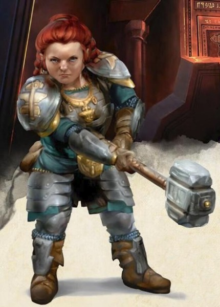

Nain
De riches royaumes d’une ancienne magnificence, des halls creusés aux racines mêmes des montagnes, l’écho des pioches et des marteaux dans les mines profondes et les forges ardentes, un engagement au clan et à la tradition ainsi qu’une intense haine des gobelins et des orcs, ce sont les traits communs qui unissent tous les nains.
Petits et costauds
« T’es en r’tard l’elfe » émit l’accent rugueux d’une voix familière. Bruenor Martelrixe escalada le dos de son ennemi abattu, négligeant le fait que le monstre imposant s’était affaissé sur son elfe d’ami. Malgré l’inconfort accru, le long nez pointu et maintes fois brisé ainsi que la barbe grisonnante mais toujours aussi rousse flamboyante du nain étaient une vision tout de même bienvenue aux yeux de Drizzt. « J’me doutais bien que j'te trouverais dans la mouise si j’venais te chercher ! »
- R.A. Salvatore, L’Éclat de cristal
Téméraires et robustes, les nains sont reconnus être aussi habiles en tant que guerriers, mineurs ou artisans de la pierre et du métal. Malgré leur taille ne dépassant pas 1,50 mètre, les nains sont larges et compacts au point de peser autant qu’un humain mesurant près d’un mètre de plus. Leur courage et leur endurance rivalisent facilement avec ceux des personnes plus grandes.
Le teint de peau des nains varie du brun foncé à des tons plus pâles avec un soupçon de rouge, mais la teinte la plus commune est le brun clair ou la couleur de l’ocre foncé, comme certains tons de la terre. Leur chevelure, portée longue mais simplement stylisée, est habituellement noire, grise ou brune, bien que les nains plus pâles aient souvent les cheveux roux. Les hommes accordent une grande valeur à leur barbe et l’entretiennent avec grand soin.
Bonne mémoire et longues rancœurs
Les nains peuvent vivre plus de 400 ans. Ainsi, les nains les plus âgés se remémorent souvent un monde bien différent. Par exemple, certains des plus vieux nains demeurant à la Citadelle Felbarr (dans l’univers des Royaumes Oubliés) se souviennent du jour, il y a plus de trois siècles, où les orcs firent la conquête de la forteresse et les chassèrent vers un exil qui dura plus de 250 ans. Cette longévité leur confère une perspective sur le monde qui échappe aux races dont l’espérance de vie est plus courte, comme les humains et les halfelins.
Les nains sont aussi solides et endurants que les montagnes qu’ils affectionnent, résistant au passage des siècles avec une endurance stoïque et de minimes changements. Ils respectent les traditions de leurs clans, qui remontent jusqu’à leurs ancêtres, au moment de la fondation de leurs plus anciens bastions alors que le monde était encore jeune. Et ils n’abandonnent pas facilement leurs traditions. Une part de ces traditions est le dévouement aux dieux des nains, qui prônent les idéaux nains du travail industrieux, de l’habilité au combat et du dévouement à la forge. Individuellement, un nain est déterminé et loyal, fidèle à sa parole et résolu dans ses actions au point d’être considéré comme un entêté. De nombreux nains possèdent un sens accru de la justice et oublient lentement le mal qu’on leur a fait subir. Un affront fait à un nain est un affront fait à tous les nains de son clan. Ce qui débute comme la vengeance d’un nain peut dégénérer en guerre de clans.
Clans et royaumes
LENT À FAIRE CONFIANCE
Les nains s’entendent relativement bien avec les autres races. « La différence entre une connaissance et un ami est d’environ cent ans » est un adage nain qui peut n’être qu’une hyperbole mais qui souligne à quel point il peut être difficile d’obtenir la confiance d’un nain pour un membre d’une race à la faible longévité, comme les humains.
Elfes. « Il n’est pas sage de se fier aux elfes. On ne peut pas dire ce qu’un elfe fera. Lorsque le marteau rencontre la tête de l’orc, ils peuvent aussi bien se mettre à chanter qu’à dégainer l’épée. Ils sont volages et frivoles. Toutefois, deux choses peuvent être dites à leur propos. Peu nombreux sont leurs artisans, mais ils font du très bon travail. Et quand les orcs ou les gobelins dévalent la montagne, il est bon de savoir qu’un elfe assure vos arrières ».
Halfelins. « Soit, ce sont des gens plaisants. Mais montrez-moi un héros halfelin, un empire, une armée triomphante, ou au moins un trésor transcendant les âges fabriqué par les mains d’un halfelin. Il n'y en a pas. Comment les prendre au sérieux ? ».
Humains. « Vous prenez le temps d’apprendre à connaître une humaine qu’elle se retrouve déjà sur son lit de mort. Si vous êtes chanceux, elle a de la famille, une fille ou une petite fille peut-être, qui, comme elle, ont des bonnes mains et un bon cœur. Là, vous pouvez vous faire amie d'une humaine. Puis les regarder partir ! S'ils convoitent quelque chose, ils vont le chercher, que ce soit le butin d’un dragon ou un trône impérial. Ce genre de détermination est admirable, même si ça peut les mettre dans le pétrin plus d'une fois ».
Les royaumes nains s’étendent loin sous les massifs montagneux où les nains exploitent des mines de pierres et de métaux précieux pour en faire des objets merveilleux. Ils aiment la beauté et les qualités artistiques des métaux précieux et des bijoux raffinés à un point tel que certains nains succombent à l’avarice. S’il existe une richesse qu’ils ne peuvent trouver sous leurs montagnes, ils l’obtiennent par le commerce. Comme ils n’apprécient pas les bateaux, ce sont plutôt des humains et des halfelins entreprenants qui font le négoce des biens d’origine naine le long des voies maritimes. Les membres fiables des autres races sont bien accueillis dans les établissements nains, bien que certaines zones ne leur soient pas accessibles.
L'unité principale de la société naine est le clan, et les nains apprécient hautement la valeur d’une position sociale. Même ceux qui vivent loin de leurs propres royaumes chérissent leur identité et leur affiliation clanique, et savent reconnaître les nains avec qui ils sont liés. Il n’est pas rare d’entendre un nain invoquer le nom d’un ancêtre en jurant ou en prêtant serment. Ne pas faire partie d’un clan est le pire sort qui puisse arriver à un nain. Les nains hors de chez eux sont généralement des artisans, plus particulièrement des forgerons, des armuriers ou des bijoutiers. Certains sont mercenaires ou gardes du corps, recherchés pour leur courage et leur loyauté.
Dieux, or et clan
Les nains qui s’adonnent à la vie d’aventurier peuvent être motivés par le désir de trésors, pour son propre gain, pour une raison spécifique ou même par altruisme, pour aider les autres. D’autres nains sont poussés à la demande d’un dieu ou par l’inspiration d’une divinité, en réponse à un appel ou simplement par désir d’apporter la gloire à l’un des dieux nains. Le clan et l’ascendance sont aussi des motivateurs importants. Un nain pourrait tenter de rétablir l’honneur perdu d’un clan, venger un vieil affront subi par le clan ou gagner une nouvelle position dans le clan après un exil. Ou bien un nain pourrait chercher la hache que portait un puissant ancêtre, perdue sur le champ de bataille il y a de nombreux siècles.
Noms nains
Le nom d'un nain lui est donné par un ancien du clan, conformément à la tradition. Chaque nom est utilisé et réutilisé à travers les générations, car le nom d’un nain appartient au clan et non pas à la personne. S’il fait honte à son nom ou le salit, le clan privera le nain de son nom, et la loi naine interdit à toute personne ainsi dépouillée de son nom d’utiliser un autre nom nain à sa place.
Noms masculins : Adrik, Albérich, Baern, Barendd, Brottor, Bruenor, Dain, Darrak, Delg, Eberk, Einkil, Fargrim, Flint, Gardain, Harbek, Kildrak, Morgran, Orsik, Oskar, Rangrim, Rurik, Taklinn, Thoradin, Thorin, Tordek, Traubon, Travok, Ulfgar, Veit, Vondal.
Noms féminins : Ambre, Artin, Audhild, Bardryn, Dagnal, Diesa, Eldeth, Falkrunn, Finellen, Gunnloda, Gurdis, Helja, Hlin, Kathra, Kristryd, Ilde, Liftrasa, Mardred, Riswynn, Sannl, Torbera, Torgga, Vistra.
Noms de clan : Balderk, Barbegelée, Dankil, Forgefeu, Fortenclume, Gorunn, Holderhek, Loderr, Lutgehr, Marteaudeguerre, Poing de Fer, Rumnaheim, Strakeln, Torunn, Ungart.
Traits
Votre personnage nain est doté d'un ensemble de capacités innées liées à sa nature de nain.
Augmentation de caractéristiques. Votre Constitution augmente de 2.
Âge. Les nains vieillissent au même rythme que les humains, mais sont considérés comme jeunes jusqu'à ce qu'ils atteignent l'âge de 50 ans. En moyenne, ils vivent environ 350 ans.
Taille. Les nains mesurent entre 1,20 m et 1,50 m pour un poids aux alentours de 70 kg. Votre taille est Moyenne (M).
Vitesse. Votre vitesse de base est de 7,50 mètres. Votre vitesse n'est pas réduite par le port d'une armure lourde.
Vision dans le noir. Habitué à la vie souterraine, vous avez une vision supérieure dans l'obscurité et la lumière faible. Vous pouvez voir à 18 mètres dans une zone de lumière faible comme vous verriez avec une lumière vive, et dans le noir comme vous verriez avec une lumière faible. Dans le noir, vous ne discernez pas les couleurs, uniquement des nuances de gris.
Résistance naine. Vous avez un avantage aux jets de sauvegarde contre le poison et obtenez la résistance contre les dégâts de poison.
Entraînement aux armes naines. Vous obtenez la maîtrise des hachettes, des haches d'armes, des marteaux légers et des marteaux de guerre.
Maîtrise des outils. Vous obtenez la maîtrise d'un des outils d'artisan suivant au choix : outils de forgeron, outils de brasseur ou outils de maçon.
Connaissance de la pierre. Chaque fois que vous effectuez un jet d'Intelligence (Histoire) en relation avec l'origine d'un travail lié à la pierre, considérez que vous maîtrisez la compétence Histoire et ajoutez le double de votre bonus de maîtrise au jet, au lieu du bonus de maîtrise normal.
Langues. Vous parlez, lisez et écrivez le commun et le nain. La langue naine comporte de nombreuses consonnes dures et sons gutturaux, et ces caractéristiques se retrouvent lorsqu'un nain parle une autre langue.
Sous-race. Choisissez une des deux sous-races proposées ci-après.
Nain des collines
DUERGAR
Dans des villes au profond de l'Outreterre vivent les duergars, ou nains gris. Ces marchands d'esclaves vicieux et discrets attaquent le monde en surface pour faire des prisonniers, puis vendre leurs proies aux autres races de l'Outreterre. Ils ont des capacités magiques innées pour devenir invisibles et prendre temporairement la taille d'un géant.
En tant que nain des collines, vous avez les sens aiguisés, une forte intuition et une résistance remarquable. Les nains d'or de Faerûn dans leur puissant royaume du sud sont des nains des collines.
Augmentation de caractéristiques. Votre Sagesse augmente de 1.
Ténacité naine. Votre maximum de points de vie augmente de 1 à chaque niveau.
Nain des montagnes
En tant que nain des montagnes, vous êtes fort et robuste, et habitué à une vie difficile en terrain accidenté. Vous êtes probablement plus grand que la moyenne (pour un nain) et votre peau est plus claire. Les nains d'écu au nord de Faerûn sont des nains des montagnes.
Augmentation de caractéristiques. Votre Force augmente de 2.
Formation au port des armures naines. Vous maîtrisez les armures légères et intermédiaires.
Traduit par Puncho et blueace